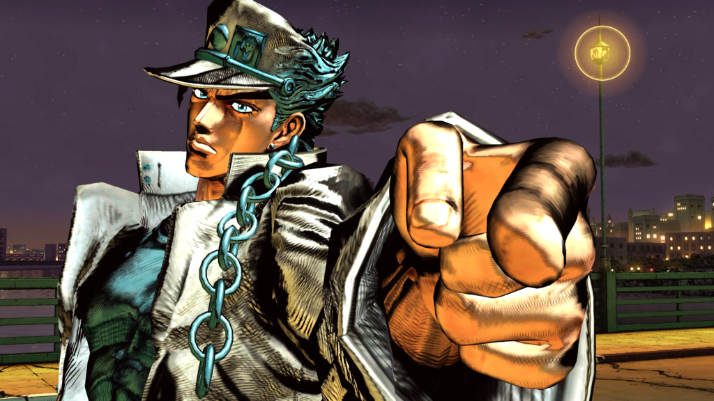
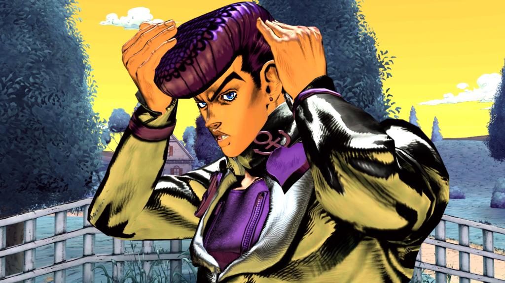
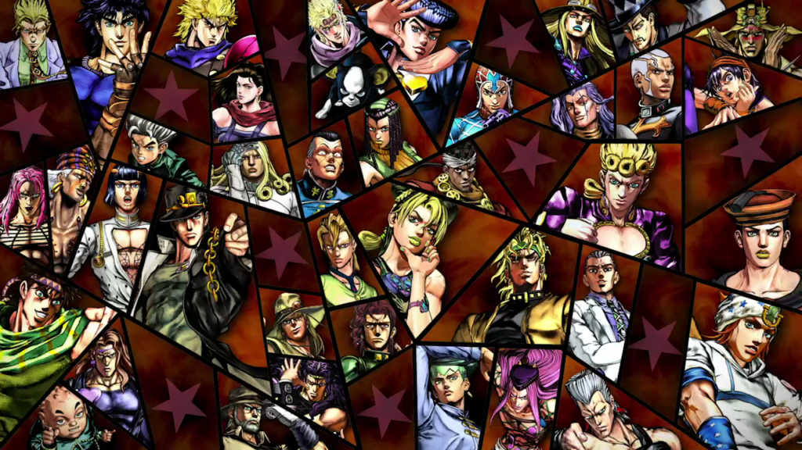

JOJO'S BIZARRE ADVENTURE: ALL STAR BATTLE R | REVIEW
A pura piña y desfile.
Si estás acá seguramente sabés de qué se trata Jojo’s, y sino te lo resumo en la siguiente frase: un grandioso anime shonen claramente de acción, aventura, colores y cosas inexplicablemente extrañas, pero divertidas. La serie ya tuvo unos cuantos videojuegos a lo largo de su lanzamiento en TV y la enorme mayoría toma las bases de su género, es decir, se orientaron a títulos de pelea.
Desde el 2 de septiembre de 2022 el titán Bandai Namco Entertainment America Inc. nos ofrece disponibilidad de este titulazo en PlayStation 4, PlayStation 5, Xbox One, Xbox Series X|S, PC y Nintendo Switch.
Esta obra arcade invita a los gamers a sumergirse en un juego que se mantiene fiel al cautivador estilo de Hirohiko Araki con expresiones de personajes fielmente recreadas, escenas de movimiento especiales «Stand» e intensas batallas estilizadas con detalles increíblemente vibrantes.
Gráficamente estamos ante la presencia de un modelado 3D que juega muchísimo con la variación de profundidades de campo y -sobre todo en PS5 y Xbox Series– el upgrade en animaciones tanto de cinemáticas, como del timing jugable se ve de maravilla si lo comparamos con su antecesor. La música es un deleite para los seguidores de la saga y la puesta en escena general de cada nivel recrea a la perfección los momentos vividos en cada temporada. Los actores de voz originales japoneses completan la inmersión entregando sus frases emblemáticas junto con el inolvidable diálogo de la serie
En esta ocasión se ha optado por incluir un listado de 50 personajes de cada arco argumental de la serie de anime y franquicia de JoJo. Asimismo, se ha dado una refrescada total al sistema de lucha del juego anterior, aumentando el ritmo con hit stops, dash jumps, combos y un nuevo sistema de batalla «Assist«. En el gameplay, los jugadores pueden experimentar batallas icónicas de cada travesía y ver a héroes de diferentes universos interactuar por primera vez. Claramente, entre los destacados se presentan Jonathan Joestar, DIO, Jotaro Kujo, Jolyne Cujoh y muchos más.
Este proyecto cuenta con seis modos de juego:
- All-Star Battle Mode: podrás completar enfrentamientos con distintas configuraciones, que incluyen revivir combates clásicos de JoJo y jugar a través de peleas alternativas mientras ganar recompensas en el camino.
- Arcade Mode: la IA te va a desafiar en ocho batallas consecutivas a través del Challenge Battle o bien luchar hasta que tu salud se agote en Endless Battle.
- Versus Mode: el clásico mod para jugar con tus amigos o la máquina en Una Batalla Única, Batalla en Equipo (3v3) o contra ocho oponentes en la Batalla del Torneo.
- Online Mode: simple, rivales de todo el mundo en partidas en línea.
- Practice Mode: perfecciona tus habilidades
- Customize Mode: aquí tendrás la posibilidad de usar las Customize Medals ganadas en el juego para modificar las poses de victoria y las locuras del personaje.
Luego de haber jugado todo el modo All-Star Battle Mode y varios enfrentamientos entre amigos de forma local, podemos confirmar que para los fans del manga/animé esta es una carta de amor, siempre y cuando seas un entusiasta de los juegos de pelea. Nos hubiera gustado tener algún ápice de novela gráfica, pero eso no borró la dulzura con la que Bandai Namco nos abrazó en esta ocasión.